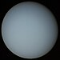

| Planeta |
Símb |
Diámetro ecuatorial |
Diámetro ecuatorial (km) |
Masa |
Radio orbital |
Período orbital (años) |
Perído rotación (días) |
Inclinación (º) |
Satelites |
Composición atmósfera |
Imagen |
| Mercurio |
|
0.39 |
4878 |
0.06 |
0.39 |
0.24 |
58.6667 |
7º |
0 |
Trazas de hidrógeno y helio |
|
| Venus |
|
0.95 |
12100 |
0.82 |
0.72 |
0.615 |
243 |
3.4º |
0 |
96 % CO2, 3 % nitrógeno,0.1 % agua |
|
| Tierra |
|
1.00 |
12756 |
1.00 |
1.00 |
1.00 |
243 |
0º |
1 |
78 % nitrógeno, 21 % oxígeno, 1 % argón |
|
| Marte |
|
0.53 |
6787 |
0.11 |
1.52 |
1.88 |
1.03 |
1.9º |
2 |
95 % CO2, 1.6 % argón, 3 % nitrógeno |
|
| Jupiter |
|
11.2 |
142984 |
318 |
5.20 |
11.86 |
0.414 |
1.3º |
79 |
90 % hidrógeno, 10 % helio, trazas de metano |
|
| Saturno |
|
9.41 |
120536 |
95 |
9.54 |
29.46 |
0.426 |
2.5º |
82 |
96 % hidrógeno, 3 % helio, 0.5 % metano |
|
| Urano |
|
3.98 |
51108 |
14.6 |
19.19 |
84.01 |
0.718 |
0.8º |
27 |
84 % hidrógeno, 14 % helio, 2 % metano |
 |
| Neptuno |
 |
3.81 |
49538 |
17.2 |
30.06 |
164.79 |
0.6745 |
1.8º |
14 |
74 % hidrógeno, 25 % helio, 1 % metano |
|